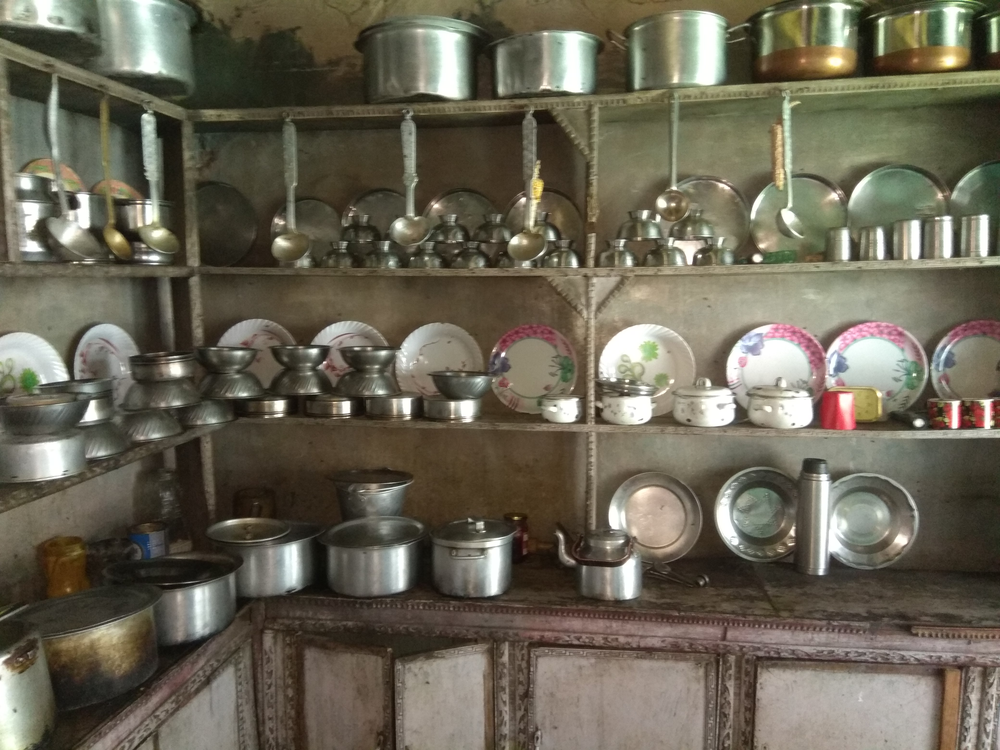

Mountain Homestays
Mountain Homestays helps in connecting remote mountain villages across of Ladakh with the outer world and ensures their development through responsible and sustainable eco-tourism. We work in the area of improving the livelihood of these communities, primarily through promoting homestays, local handicrafts, and organic products that are a local produce.
From solar elecrification to Sustainable Development
Recognitions
World Travel and Tourism Council announced Global Himalayan Expedition and Mountain Homestays as Winners Community Award in 2018. The sustainable initiative was recognized for keeping community at the heart of it's impact tourism model, ensuring empowerment of locals, benefitting them from the tourism activities and actively engaging in preservation of their cultural heritage.
WTFL 2017 - Innovation Award
Global Himalayan Expedition and Mountain Homestays were awarded Winners in the start-up innovation award category at World Tourism Forum Lucernce - 2017, for its focus towards providing clean energy, digital education and wireless connectivity access to remote Himalayan communities through impact tourism.
Women Empowerment
By promoting homestay based tourism and the local handicrafts from these solar electrified villages, the Mountain Homestays initiative has not only connected these villages with the rest of the world but has also enabled the women of these villages to earn additional income and create a sustainable, scalable social enterprise.
The access to energy has played a crucial role in positively impacting the women of these communities who now not only maintain these solar microgrids that provide electricity for their homestay but they also promote the lighting and charging facility, as a feature of their homestay, to attract trekkers. An innovative approach which has enabled these women to be actively involved in the economic activities of their households.
The women from these villages are involved in a lot of activities like carpet weaving, cutting sheep wool, apricot and apple farming apart from many more activities related to handicrafts. Some of the more enterprising women try learning English so that they are able to communicate with the tourists and trekkers that frequent these areas.

Our villages
Yurutse
Yurutse is a village with a single family that operates a homestay. The village stands very simple and majestically at the heart of the Hemis National Park.
Sumda-Chun

Sumda Chun is one of the most ancient village of Ladakh. The Sumda Chun monastery (Wiki) is endangered site and an important heritage for the villagers here.
Lingshed
Lingshed is one of the remotest village in the Zanskar region in Ladakh. To reach here you need to drive through some of the remotest roads of India and a day of trekking.
Mugleb
Mugleb is a nomadic villages of Ladakh which offers an enriching experience of nomadic lifestyle of the Changspa nomadswho live at this high plateau.
Shingo
Shingo is another beautiful village in Hemis National Park. After solar electrification in 2015, we are now working on better livelihood for this village through homestay based tourism.
Rakuru
Village Rakuru is a beautiful village of Nubra not explored by many till now. The 6hr trek to Rakuru is through the amazing mountains and the village offers a unique taste of culture and heritage.
Contact us
Mountain Homestays
C/O Global Himalayan Expedition
Leh (Ladakh), J&K - 194101
info@mountainhomestays.com
www.mountainhomestays.com